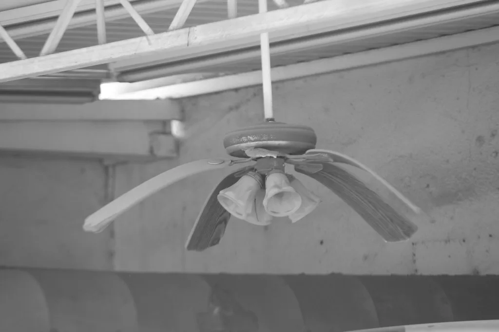

전국 폭염 계속…온열질환 사망자 늘어, 100세 노인도 참변
기록적인 폭염이 이어지면서 온열질환으로 인한 사망 사례가 잇따르고 있다. 기상청에 따르면 전국 대부분 지역에 폭염특보가 발효된 가운데 체감온도가 38도 안팎까지 치솟고 있으며, 대구·경북·경남 등 일부 지역에는 폭염중대경보까지 발령됐다. 밤에도 기온이 좀처럼 떨어지지 않으면서 전국 곳곳에 열대야주의보가 함께 내려진 상태다. 7월 하순 들어 무더위가 한층 기승을 부리면서, 방송사마다 폭염 관련 소식을 주요 뉴스로 다루는 날이 이어지고 있다.
질병관리청 집계에 따르면 올여름 온열질환자는 이미 1300명을 넘어섰고, 관련 사망자 수도 계속 늘어나는 추세다. 특히 지난 26일 오후 전북 완주의 한 밭에서는 100세 노인이 숨진 채 발견됐는데, 발견 당시 체온이 42.2도에 달했던 것으로 전해져 폭염 속 고령층의 위험이 얼마나 큰지를 여실히 보여줬다. 무더위 속에서 홀로 농작업을 하던 중 변을 당한 것으로 추정되며, 뒤늦게 이웃 주민이 발견해 신고한 것으로 전해졌다.

앞서 전날에는 해남의 한 밭길에서 태국 국적의 30대 외국인 노동자가 어지럼증을 호소하며 쓰러진 뒤 끝내 숨지는 일도 있었다. 폭염 속 야외노동에 노출된 이주노동자들의 건강 관리 문제도 함께 도마 위에 오르고 있다. 경남 지역에서도 앞서 올여름 첫 온열질환 추정 사망자가 나온 데 이어 추가 사망 사례가 확인되면서, 남부지방을 중심으로 한 폭염 피해가 갈수록 커지는 모습이다. 밭이나 비닐하우스 등 그늘이 없는 야외 작업장에서 사고가 집중되는 경향도 뚜렷하게 나타나고 있다.
이 같은 폭염은 한반도 주변을 덮은 고기압이 장기간 물러나지 않는 가운데, 남쪽에서 유입되는 고온다습한 공기가 겹치며 나타나는 현상으로 분석된다. 기상청은 당분간 폭염과 열대야가 이어질 가능성이 크다고 내다보고 있으며, 특히 이번 주는 낮과 밤을 가리지 않는 무더위로 건강에 취약한 고령층과 야외노동자들의 피해가 늘어날 수 있다고 우려했다. 일부 지역에서는 폭염에 따른 냉방기기 사용 급증으로 전력 수요도 함께 치솟고 있는 것으로 전해졌다.

정부는 폭염중대경보가 발령된 지역을 중심으로 현장상황관리관을 파견하는 등 대응 체계를 강화하고 있다. 지방자치단체들도 무더위쉼터 운영을 확대하고 논밭에서 일하는 고령 농민과 이주노동자를 대상으로 한 순찰·안내 활동을 강화하는 추세다. 다만 폭염이 장기화하면서 현장 대응 인력만으로는 한계가 있다는 지적도 나온다. 일부 지자체는 한낮 시간대 논밭 작업을 자제해달라는 행정명령성 권고까지 내리며 대응 수위를 높이고 있다.
전문가들은 홀로 거주하는 고령층의 경우 실내에서도 온열질환 위험이 커질 수 있는 만큼, 단순히 야외활동을 자제하는 수준을 넘어 주변의 정기적인 안부 확인이 필요하다고 조언한다. 이주노동자에 대해서도 작업장 단위의 휴식시간 보장과 그늘막 설치 등 최소한의 안전장치를 의무화해야 한다는 목소리가 커지고 있다. 폭염이 매년 반복되는 만큼 임시방편이 아닌 제도적 대응이 필요하다는 지적도 뒤따른다.
당국은 한낮 야외활동을 가급적 자제하고 충분한 수분과 휴식을 취해줄 것을 거듭 당부하고 있다. 특히 혼자 농사일을 하는 고령층과 실외 작업이 잦은 이주노동자의 경우 체감온도가 높은 시간대에는 작업을 중단하는 등 각별한 주의가 필요하다는 조언이 이어진다. 무더위가 언제까지 이어질지 예단하기 어려운 만큼, 당분간 전국적인 폭염 대비 태세가 계속될 전망이다.